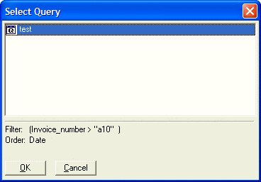

UI_GET_QUERY_NAME()
Syntax
Query_Name as C = UI_GET_QUERY_NAME( Table_Set_Name as C [, Default_Choice as C [, Title as C ]]] )
Argument | Description |
Query_Name | The name of the query returned by the function. |
Table_Set_Name | The table or set on which the query operates. |
Default_Choice | The default query selection. |
Title | The title of the dialog box. |
Description
The UI_GET_QUERY_NAME() function prompts for the name of a saved Query operation.

Supported By
Alpha Five Version 5 and Above
Limitations
Desktop applications only.
Example
? UI_GET_QUERY_NAME("customer") = "test" |
See Also
((User Interaction _UI_ Functions|User Interaction (UI) Functions)), Query Functions and Methods